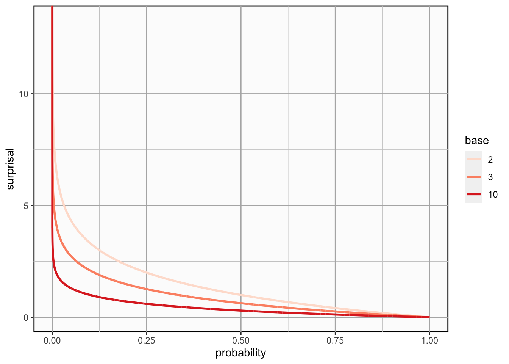

B A Primer on Information Theory II
B.1 Surprisal
In the Bayesian way of thinking, the concept of probability gives us a way to talk about uncertainty. Roughly speaking, we quantify our beliefs about any outcome of a random variable by assigning each outcome a weight (the probability we assign to that event), making sure that all weights add up to \(1\). As the notion of probability is so fundamental to statistics and probability theory, it’s easy to overlook that this is not the only way of thinking about uncertainty. A different approach that is fundamental to information theory is the notion of surprisal.
Surprisal expresses our uncertainty about an event by quantifying how surprised we would be, should the event occur.
The notion of surprisal is consistent with a Bayesian vocabulary because it acknowledges the subjectivity of belief and we can derive it from probability. First of all, we want surprisal and probability to be inversely proportional to one another: The more likely and event is to occur, the less surprised we will be about it. A naive way of expressing this would be to just take the inverse of the probability \(p\):
\[ \frac{1}{p} \]
So far so good, but this is not the actual formula for surprisal because this metric has an unsatisfying property: If something is certain to happen, i.e., the probability is our surprisal will be \(\frac{1}{p} = \frac{1}{1} = 1\). But if it is certain to happen, we would expect our surprisal to be \(0\).
There is a function that we can use to scale the inverse probability, so that we can satisfy this requirement: the logarithm. The logarithm of \(1\) for any base \(b\) is \(0\) which is exactly the property we require. Thus, if we simply take the logarithm of the inverse of probability, we can scale our formula to have the required properties. This is the actual formula for surprisal:
\[ I(x = X) = log_b(\frac{1}{P(x = X)}) = -log_b(p) \]
We use the symbol \(I\) to denote surprisal because it is also commonly referred to as information content1.
B.1.1 What about the Base of the Logarithm?
You may have noticed that we have left the base \(b\) of the logarithm in the formula for surprisal open. This is because the base of the logarithm defines the unit of information at which we are measuring surprisal. The most common one (and the one we use in our approaches) is base \(2\). With base \(2\), we express information in bits (= “binary digits”). If you choose base \(10\), the unit is a decimal digit (or Hartley) and base \(3\) gives you a trit. Thus, with different values for \(b\), we can change the unit of information at which we are expressing our surprise.
Here is what the relationship between probability and surprisal looks like graphically with different bases \(b\):

The function is strictly decreasing so surprisal inversely proportional to probability. Note that surprisal is undefined for a probability of \(0\). This is fine because we have no need to express our surprise about an event that will never occur.
B.2 Entropy
Entropy is simply the expected value of surprisal.
We only need to consider discrete random variables for entropy for our cases, but entropy also generalizes for the continuous case. Entropy is given by2:
\[ H(X) := -\sum_{x \in X}{p(x)log(p(x))} \]
B.3 How do Entropy and Surprisal Relate to One Another?
Entropy is the expected surprisal. This may sound odd at first. A measure that quantifies how surprised I expect to be sounds like an oxymoron. But it does make sense.
First of all, with probability, we encode our uncertainty about outcomes of a random variable. We are using all the information we have, but we know that we don’t have all the information. Thus, we know that we will be surprised about the outcome in some way because the outcome is not certain. Entropy gives us a way to quantify how surprised we expect to be about the outcome.
Useful resources on surprisal and entropy
Other terms for surprisal that you might come across are self-information and Shannon information.↩︎
You may ask yourself: Why is \(H\) the formula symbol for a metric called entropy? That’s because Shannon entropy is based on Boltzmann’s H-theorem in statistical thermodynamics. It is contested why Boltzmann called entropy \(H\), but the common conjecture is that he actually meant the greek letter Eta (\(H\)) which would make a lot more sense. There have actually been typographical analyses of his handwriting to determine whether he meant Eta, not the letter \(H\)!↩︎